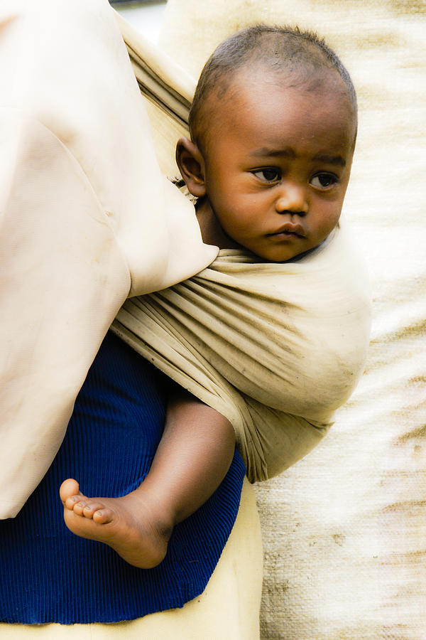
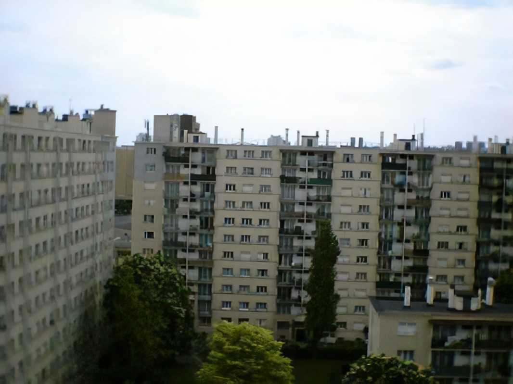
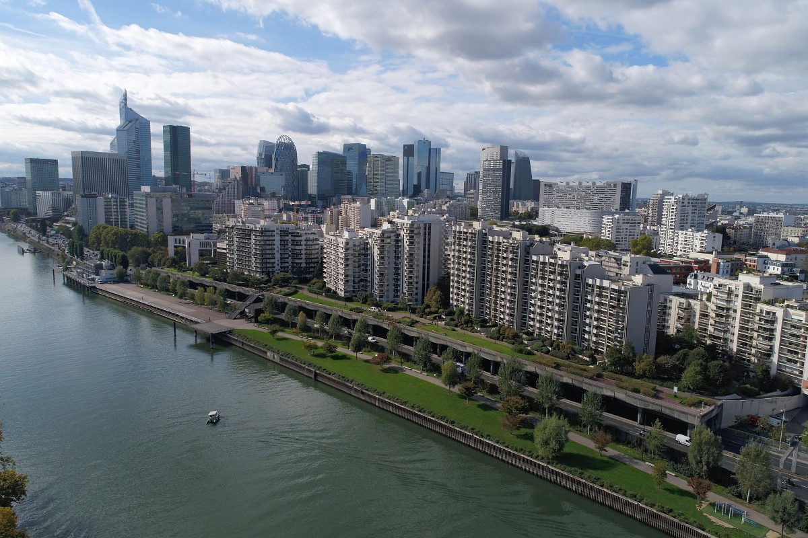
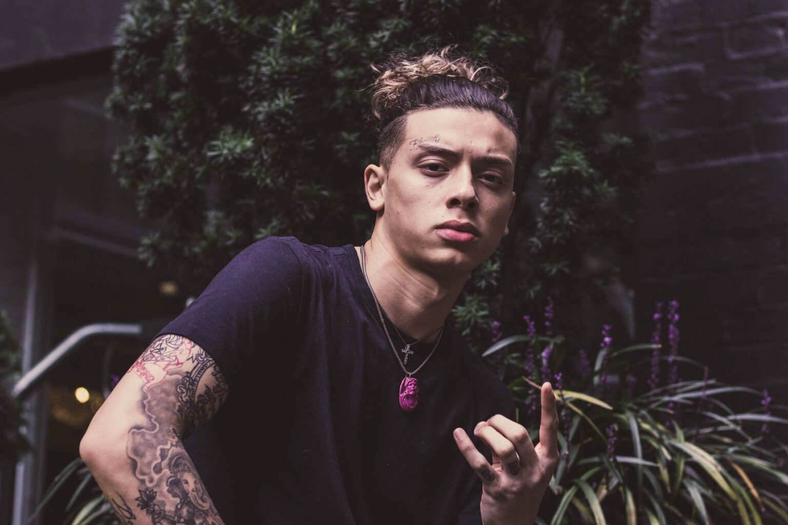
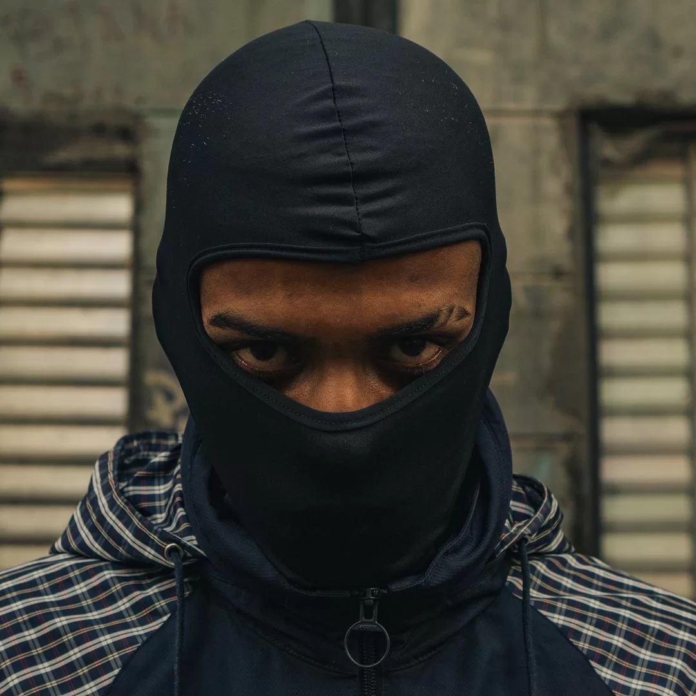
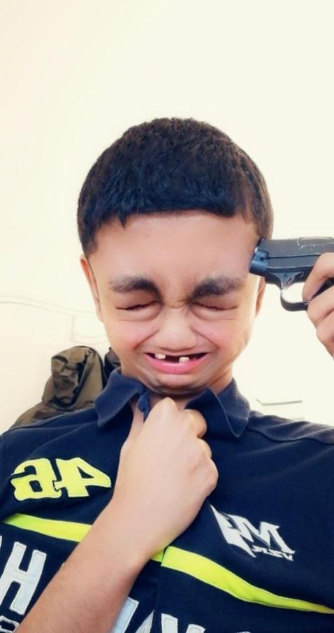

Le Commencement
La Naissance d'une légende
Ndroso est né le à Antananarivo.
La Vie dans le 93
Ndroso a vécu la première partie
L'Arrivée à Courbiche
La famille de Ndroso a par la suite
Carrière de Rap
Ses Inspirations
Ndroso est un véritable amateur de rap
Sa Transformation
Ndroso est
l'Ascension de NRK
Le 28 Mai 2020 NRK sort un premier album appelé "Business is business", Cet album est considéré par beaucoup comme son plus grand classique, et comme le meilleur album du rap français et anglais. L'album est certifié septuple disque de diamant, reccord absolu. Le clip "Business is business" issu du projet du même nom a été visionné plus de 1 milliard de fois sur Youtube. En Août 2021 il est emmené à l'hopitâl suite à une overdose causée par sa grosse consommation de drogues durs. Il tombe dans le coma et finira par se réveiller un an plus tard.
Carrière d'acteur
Son plus grand rôle
Après être sorti du coma, à la suite de sa prise de drogue, il déclare : "J'ai tout niqué dans le rap maintenant je vais niquer le cinéma." Par la suite il passe des essais à Londres pour le casting de la saga Harry Potter. Sa performence est tellement remarqué que J.K Rowlling elle-même a insisté pour qu'il joue le rôle principal. Le reste appartient à l'histoire.
Tentative de suicide
Fort de son succès dans la suite de Harry Potter et de sa formidable carrière de rap, Ndroso a atteint un niveau de popularité tel qu'il ne pouvait même plus marcher dans la rue. Il a réccement avoué en interview qu'il avait très mal géré cette partie de sa vie : "J'ai eu du mal à m'habituer à tout ces changements dans ma vie, j'ai tenté de me suicider, mais j'ai foiré."